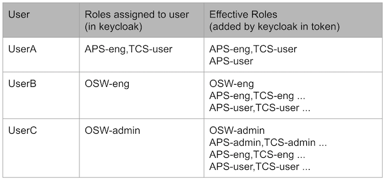

Esw Gateway
This is provided to give access to all CSW and ESW services and components from browser-based user interfaces.
Esw Gateway with authentication and authorization
Esw Gateway is accessible to public network and exposes API endpoints through Http interface, hence we need to protected its endpoints from unauthorized access.
Protection on Commands service endpoints on Gateway
There are commands which are more restrictive which need eng or above role and some commands which just need user level role. Also, these more restrictive eng commands need a fined grained control mechanism so that they can be safely executed by authorized person having specific role at subsystem level. To achieve this we need to have a role hierarchy at subsystem level along with a config table containing the mapping between more restrictive commands and these roles.
Role Hierarchy

This type of role hierarchy is created in Keycloak as one time setup. As per this hierarchy there should be three roles present for each subsystem which are composed in specific order.
- E.g. TCS-admin -> TCS-eng -> TCS-user.
- When you assign a user TCS-eng role, keycloak will automatically add TCS-user role to that user
- When you assign a user TCS-admin role, keycloak will automatically add TCS-eng and TCS-user role to that user
Also, there are three special roles. OSW-admin, OSW-eng and OSW-user which are composed of all respective subsystem level roles.
- E.g. When you assign a user OSW-eng role, keycloak will automatically add roles TCS-eng, APS-eng and so on to that user and these roles will automatically add their respective lower level roles TCS-user, APS-user and so on
Examples:

Command Role Mapping
Below shown are example entries in config table with commands and roles who can execute those commands.
IRIS.filter.wheel.startExposure: [IRIS-user, APS-eng]
IRIS.filter.wheel.stopExposure: [IRIS-user, APS-eng]
We need to create a config containing role mapping entries like shown above and use it when starting esw-gateway server.
How to start Gateway
Use command role mapping file from local file system
./esw-gateway-server start --local --command-role-config-path /local/path/filename.conf
or
./esw-gateway-server start -l -c /local/path/filename.conf
Use command role mapping file from config service
./esw-gateway-server start --command-role-config-path /path/filename.conf
or
./esw-gateway-server start -c /path/filename.conf
Protection on Sequencer endpoints on Gateway.
On protected endpoints of sequencer commands in esw-gateway, {subsystem}-user role check is performed.
- Subsystem is obtained form componentId.prefix.subsystem
- E.g. If current sequence to be executed is for esw.primary then user should have minimum ESW-user role.